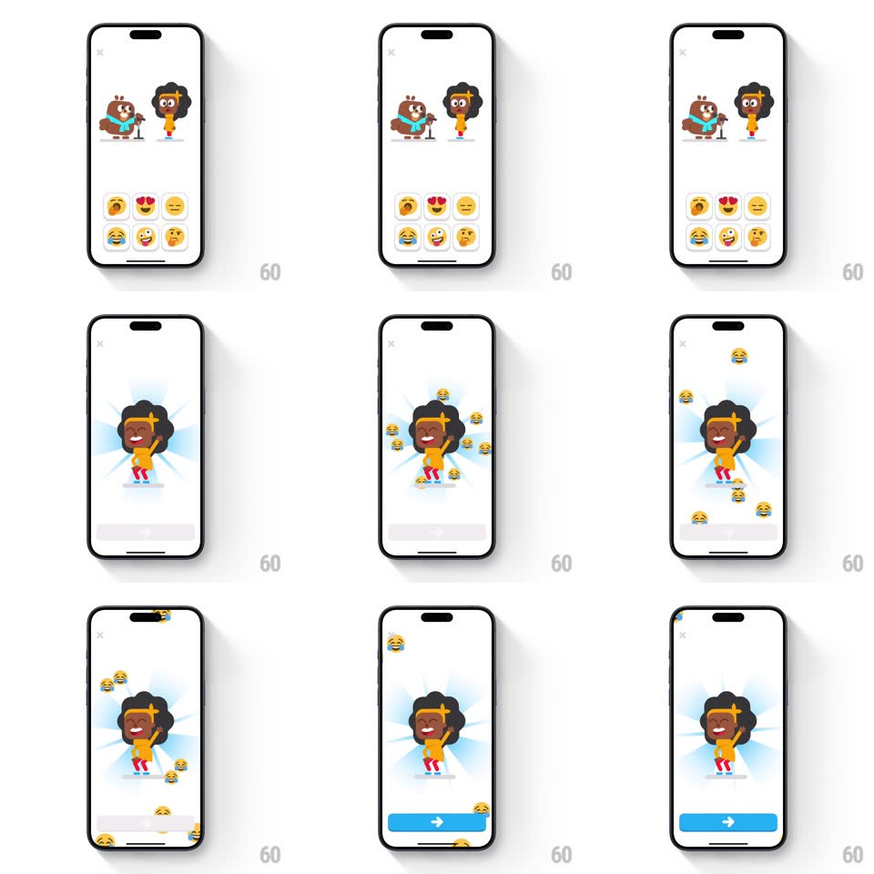

Media
Frame-by-frame

Rebuild this interaction 1:1: Duolingo ABC's emoji reaction - tapping an emoji in the picker grid sends the chosen character into a full-screen celebration: the character grows huge over a radiating sunburst while copies of the picked emoji float up around it, ending with a blue arrow button.

Rebuild this interaction 1:1: Duolingo ABC's emoji reaction - tapping an emoji in the picker grid sends the chosen character into a full-screen celebration: the character grows huge over a radiating sunburst while copies of the picked emoji float up around it, ending with a blue arrow button. ## Integration Integration: stack-agnostic spec - springs given as stiffness/damping, timed motions as duration + curve; map every value to your framework and animation library of choice. ## Scene White screen: two characters up top (a brown one with a mic, an orange curly-haired one), a 2x3 emoji picker grid below. Reaction state: the orange character centered and huge over a light-blue radial sunburst, laughing emojis floating around, a blue arrow pill bottom. ## Motion spec Pattern: full-screen character celebration with emoji particles. - Tap an emoji: the picked cell pops (scale 1 -> 1.3 -> 1, spring ~420/16) and the grid + second character slide down and fade out (250ms). - The chosen character springs to center, growing 3x (spring ~300/16 - overshooting bounce) as a radial sunburst fades in behind it (300ms, rays slowly rotating 8deg/s). - The character bobs joyfully (translateY +-8px with +-5deg tilt, 1.2s sine) with a happy expression swap. - Emoji particles: copies of the picked emoji spawn from below and float upward (rise 120% of screen over 3-4s, gentle +-20px sway, fade in first/last 15%), spawning continuously ~2/s. - The blue arrow button slides up (spring ~360/20) once the celebration peaks (~1s in) - exit without killing the mood. ## Calibration - Particles are the PICKED emoji - laugh face tap rains laugh faces. - The sunburst is pale (10% blue) - energy without noise. ## Reduced motion Character appears at center with a static burst; no particles. ## Don't miss - The un-picked character leaves - the spotlight is singular. - Particles keep spawning behind the arrow button - the celebration never hard-stops before the user leaves.